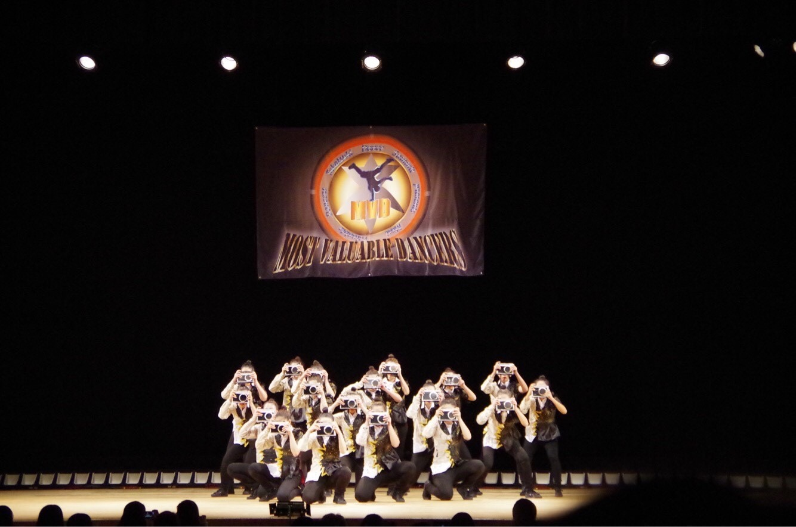
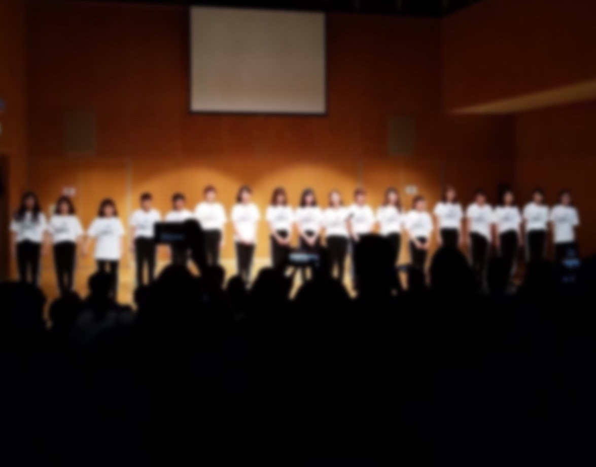
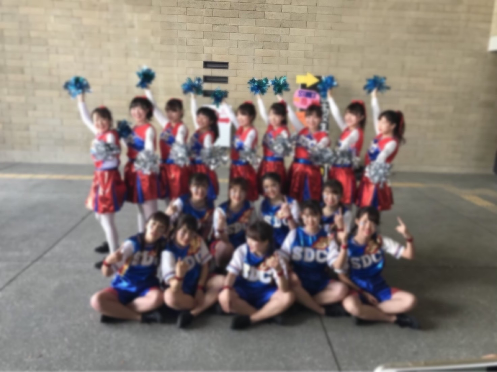

・部員数 各学年約20名
・活動期間 1年4月～３年4月（２年間）
・主な活動 校内ライブ、ダンス大会出場、体育祭の団ダンス係など
  | 4月 | 5月 | 6月 | 7月 | 8月 | 9月 | 10月 | 11月 | 12月 | 1月 | 2月 | 3月 | |
|---|---|---|---|---|---|---|---|---|---|---|---|---|
| 1年生 | 入部 | デビューライブ | 豊中祭り | 文化祭 | ヤングフェスティバル | シャフルライブ | ダンスフェスティバル | |||||
| 2年生 | 新人戦、新歓ライブ | ふれあい緑地 | 合宿、DANCE STADIUM | 文化祭 | ダンスドリル | MVD | ダンスフェスティバル | |||||
| 3年生 | 引退ライブ |
↑詳細は学年をクリック
Q1: ダンスを踊る前の準備運動のことを何というか？
Q2: Hip Hopの走っているように見えるステップは何というか？
Q3: LOCKダンスの手をくるくる回す動作を何というか？
Q4: Jazzダンスの起源はなにか？